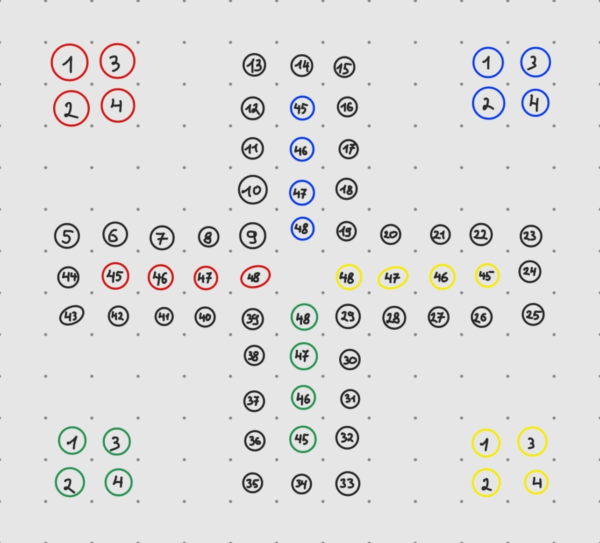

Software Architektur
Software Architecture
classDiagram
class main {
cpp file with main code \n(Controller)
}
main *-- Game_Logic
class Game_Logic{
Library with all
classes and methods
for the Game Logic (Model)
}
ASL *-- RGBmatrixPanel
class RGBmatrixPanel{
Hardware Abstraction Layer:*
Library provided by
the matrix manufacturer
}
class ASL{
Application service Layer*
Library with all classes
and methods for the
Hardware handling. (View)
}
main *-- ASL
ASL *-- HAL
RGBmatrixPanel *-- HAL
class HAL{
Hardware Abstraction Layer*
}
Finite State Machine (with external memory)
stateDiagram-v2
[*] --> s0
s0 : Display Setup Real Players
s0 --> s1: Code Executed
s1 : Setup real Players
s1 --> s2 : Green Button
s2 --> s1: Code Executed
s2 : Modify real Player Number
s1 --> s3c: Red Button
s3c : Display Setup Computer Players
s3c --> s3: Code Executed
s3 : Setup Computer Players
s3 --> s4 : Green Button
s4 : Modify Computer Player Number
s4 --> s3: Code Excuted
s3 --> s3d : Red Button
s3d: Display Setup Computer Player Mode
s3d --> s3a: Code executed
s3a: Setup Computer Player Mode
s3a --> s3b: Green Button
s3a --> s4a: Red Button
s3b: Modify Computer Player Mode
s3b --> s3a: Code Executed
s4a: Init Game Logic
s4a --> s5: Init Complete
s5 : Wait for Dice Roll
s5 -->s6 : Green Button
s6 : Roll the Dice
state if2 <<choice>>
s6 --> if2 : Dice was rolled.
if2 --> s5 : not a 6 and all players in starting square\n and not completed 3 turns to roll the dice.
if2 --> s9a: not a 6, all players in starting square\n and completed 3 turns to roll the dice.
if2 --> s8a: none of the other.
# Players ------------------
s7 : Wait for Player Input
s7 --> s8a : Green Button (next token)
s8 : Display token
s8 --> s7 : Code Executed
s7 --> s9 : Red Button
s8a: Validate token
s8a --> s8 : Valid Token found.
s8a --> s9a: No Valid Token found.
s9 : move token
state if1 <<choice>>
s9 --> if1 : Player finished move.
if1 --> s5 : Player gets one more turn\n (Dice value was 6.)
if1 --> s9a : not all tokens in finishing square,\n next player.
if1 --> s10 : all tokens in finishing square.
s9a: Next Player
s9a --> s5: Code Executed
s10: Game finished
s10 --> s0 : Button pressed.
Game Logic Library
Class Diagram
note: - : private
# : protected
+ : public
classDiagram
%%{init:{'flowchart':{'nodeSpacing': 50, 'rankSpacing': 100}}}%%
class cla_session {
- uint8_t u8_player_quantity
- uint8_t u8_computer_quantity
+ cla_player *array_players[4]
+ uint8_t u8_is_occupied_player_id
+ uint8_t u8_is_occupied_token_number
+ cla_session(uint8_t _u8_player_quantity, uint8_t _u8_computer_quantity)
+ Is_Occupied(uint8_t &u8_is_occupied_player_id, uint8_t &u8_is_occupied_token_number, uint8_t _u8_affected_track_position) bool
+ Return_Home(uint8_t _u8_affected_track_position) bool
+ Get_Player_Quantity() uint8_t
+ Get_Computer_Quantity() uint8_t
}
cla_session "1" *-- "1..4" cla_player
class cla_player {
# uint8_t u8_token_position[4]
# uint8_t u8_start_position
# uint8_t u8_player_id
# cla_session* obj_my_session
+ cla_player(uint8_t _u8_start_position, uint8_t _u8_computer_quantity, cla_session* _obj_my_session)
+ Calculate_Possible_Position(uint8_t _u8_token_number, uint8_t _u8_dice_value) uint8_t
+ Move_Token(uint8_t _u8_token_number, uint8_t _u8_dice_value) uint8_t
+ Get_Token_Position(uint8_t _u8_token_number) uint8_t
+ Set_Token_Position(uint8_t _u8_token_number, uint8_t _u8_new_position) uint8_t
+ Get_Token_Progress(uint8_t _u8_token_number) uint8_t
+ Get_Player_Status() status
+ Get_Player_Progress() uint8_t
+ Is_Start_Field_Occupied_By_Own_Token() int8_t
+ virtual Is_Computer() bool
+ virtual Auto_Move(uint8_t _u8_dice_value, bool &_bool_occupied_flag, uint8_t &_u8_old_position) int8_t
}
cla_player <|-- cla_manual_player
class cla_manual_player
cla_player <|-- cla_computer_player
class cla_computer_player{
# mode u8_en_mode
+ cla_computer_player(uint8_t _u8_player_id, uint8_t _u8_start_position, uint8_t _u8_computer_quantity, cla_session *_obj_my_session, mode _en_mode)
+ Auto_Move(uint8_t _u8_dice_value, bool &_bool_occupied_flag, uint8_t &_u8_old_position) int8_t
+ Is_Computer() bool
}
mode "1" --* "1" cla_computer_player
class mode{
<<typedef enum>>
Student
Professor
}
token_position and token_progress
The absolute position of the token. The track squares are numbered the same for all players, so the starting track position for each player differs.
The relative Position of the token. The track squares are numbered individually for each player, so the starting track position for each player has the same number.
The following table shows all of the relative positions of the Players with the corresponding absolute position and Position name.
| position |
Player 1 |
Player 2 |
Player 3 |
Player 4 |
absolute position |
| starting square 1 |
1 |
1 |
1 |
1 |
1 |
| starting square 2 |
2 |
2 |
2 |
2 |
2 |
| starting square 3 |
3 |
3 |
3 |
3 |
3 |
| starting square 4 |
4 |
4 |
4 |
4 |
4 |
| track position 1 |
5 |
35 |
25 |
15 |
5 |
| track position 2 |
6 |
36 |
26 |
16 |
6 |
| track position 3 |
7 |
37 |
27 |
17 |
7 |
| track position 4 |
8 |
38 |
28 |
18 |
8 |
| track position 5 |
9 |
39 |
29 |
19 |
9 |
| track position 6 |
10 |
40 |
30 |
20 |
10 |
| track position 7 |
11 |
41 |
31 |
21 |
11 |
| track position 8 |
12 |
42 |
32 |
22 |
12 |
| track position 9 |
13 |
43 |
33 |
23 |
13 |
| track position 10 |
14 |
44 |
34 |
24 |
14 |
| track position 11 |
15 |
5 |
35 |
25 |
15 |
| track position 12 |
16 |
6 |
36 |
26 |
16 |
| track position 13 |
17 |
7 |
37 |
27 |
17 |
| track position 14 |
18 |
8 |
38 |
28 |
18 |
| track position 15 |
19 |
9 |
39 |
29 |
19 |
| track position 16 |
20 |
10 |
40 |
30 |
20 |
| track position 17 |
21 |
11 |
41 |
31 |
21 |
| track position 18 |
22 |
12 |
42 |
32 |
22 |
| track position 19 |
23 |
13 |
43 |
33 |
23 |
| track position 20 |
24 |
14 |
44 |
34 |
24 |
| track position 21 |
25 |
15 |
5 |
35 |
25 |
| track position 22 |
26 |
16 |
6 |
36 |
26 |
| track position 23 |
27 |
17 |
7 |
37 |
27 |
| track position 24 |
28 |
18 |
8 |
38 |
28 |
| track position 25 |
29 |
19 |
9 |
39 |
29 |
| track position 26 |
30 |
20 |
10 |
40 |
30 |
| track position 27 |
31 |
21 |
11 |
41 |
31 |
| track position 28 |
32 |
22 |
12 |
42 |
32 |
| track position 29 |
33 |
23 |
13 |
43 |
33 |
| track position 30 |
34 |
24 |
14 |
44 |
34 |
| track position 31 |
35 |
25 |
15 |
5 |
35 |
| track position 32 |
36 |
26 |
16 |
6 |
36 |
| track position 33 |
37 |
27 |
17 |
7 |
37 |
| track position 34 |
38 |
28 |
18 |
8 |
38 |
| track position 35 |
39 |
29 |
19 |
9 |
39 |
| track position 36 |
40 |
30 |
20 |
10 |
40 |
| track position 37 |
41 |
31 |
21 |
11 |
41 |
| track position 38 |
42 |
32 |
22 |
12 |
42 |
| track position 39 |
43 |
33 |
23 |
13 |
43 |
| track position 40 |
44 |
34 |
24 |
14 |
44 |
| finishing square 1 |
45 |
45 |
45 |
45 |
45 |
| finishing square 2 |
46 |
46 |
46 |
46 |
46 |
| finishing square 3 |
47 |
47 |
47 |
47 |
47 |
| finishing square 4 |
48 |
48 |
48 |
48 |
48 |
The following image shows the absolute Track positions:

Player Status
status Get_Player_Status()
Returns the Players status. Status is defined via typedef enum and can have the following values:
| en_status |
Token(s) in Starting Square |
Token(s) on Game Track |
Token(s) in Finishing Square |
| Start |
YES |
NO |
NO |
| Start_Track |
YES |
YES |
NO |
| Start_Finished |
YES |
NO |
YES |
| Start_Track_Finished |
YES |
YES |
YES |
| Error |
NO |
NO |
NO |
| Track |
NO |
YES |
NO |
| Finished |
NO |
NO |
YES |
| Track_Finished |
NO |
YES |
YES |
Class Diagram ASL
classDiagram
class cla_display {
- uint8_t u8_matrix_a
- uint8_t u8_matrix_b
- uint8_t u8_matrix_c
- uint8_t u8_matrix_clk
- uint8_t u8_matrix_lat
- uint8_t u8_matrix_oe
- RGBmatrixPanel *obj_matrix
- uint8_t u8_track_positions[40][3]
- uint8_t u8_home_positions[4][4][2]
- uint8_t u8_finish_positions[4][4][2]
- uint8_t u8_smiley_postitions[26][2]
- int16_t u16_player_color[4][2]
- uint16_t u16_track_color
- en_blink_mode en_current_blink_mode
- int8_t i8_blink_counter
- en_blink_type en_current_blink_type
- uint8_t u8_blink_player_number
- int8_t i8_blink_second_player
- uint8_t u8_blink_old_position
- uint8_t u8_blink_new_position
- uint8_t u8_blink_state
+ cla_display(uint8_t _u8_matrix_a, uint8_t u8_matrix_b, uint8_t u8_matrix_c, uint8_t \n u8_matrix_clk, uint8_t u8_lat, uint8_t u8_matrix_oe)
+ void Set_Colors(uint8_t _u8_player_nr, uint16_t _u16_bright_color, uint16_t \n _u16_dark_color)
+ void Begin()
+ void Display_Track()
+ void Display_Players(uint8_t _u8_player_quantity,bool _bool_tokens_at_home = true)
+ void Display_Restore()
+ void Display_Current_Player(int8_t _i8_current_player_number, int8_t _i8_tokens_at_home = -1)
+ void Display_Progress(int8_t _i8_current_player_number, uint8_t _u8_progress)
+ void Display_Char(char _ch_first_letter = ' ', char _ch_second_letter = ' ', \n char _ch_third_letter = ' ')
+ void Display_Clear_Right()
+ void Blink_Start(en_blink_mode _en_blink_mode, int8_t _i8_blink_cycles,\n en_blink_type _en_blink_type, uint8_t _u8_blink_player_number, int8_t _i8_blink_second_player,\n uint8_t _u8_new_position= 0, bool _bool_occupied_flag = true, uint8_t _u8_old_position = 0)
+ bool Blink_Update(bool _bool_isr_active)
+ void Blink_Stop()
+ bool Blink_Is_On()
+ void Modify_Position(uint8_t _u8_position, uint8_t _u8_player_number, bool bool_remove)
+ void Move_Token(uint8_t _u8_player_nr, uint8_t _u8_remove_position, \n uint8_t _u8_add_position)
+ void Display_Dice(uint8_t _u8_dice_value, uint8_t _u8_dice_roll_counter,\n int8_t _i8_current_player_number, bool _bool_animate = true)
}
class en_blink_mode{
<<enumeration>>
Slow
Fast
Off
}
class en_blink_type{
<<enumeration>>
token
token_thrown
starting_square
winner_animation
}
cla_display "1" --* "1" en_blink_type
cla_display "1" --* "1" en_blink_mode
class other_functions{
functions in ASL namespace
void Setup_Buttons()
void Setup_Dice()
uint8_t Roll_Dice()
void Delay_256(uint16_t _u16_delay)
}
class en_state{
<<enumeration>>
display_setup_real_players
setup_real_players
modify_real_player_number
display_setup_computer_players
setup_computer_players
modify_computer_player_number
display_setup_computer_player_mode
setup_computer_player_mode
modify_computer_player_mode
init_game_logic
wait_for_dice_roll
roll_the_dice
wait_for_player_input
display_token
validate_token
move_token
next_player
game_finished
}
Timers
The Game uses 5 of the 6 timers, which is one of the reasons an ATMega2560 was chosen over the ATMega328p:
- Timer 0: ( 8Bit) Runs from 0 to 5 to create a "random" Dice value
- Timer 1: (16Bit) Used for the LED matrix
- Timer 2: ( 8Bit) Reserved for future features, currently used for measuring interupt durations
- Timer 3: (16Bit) Used for Button Debounce
- Timer 4: (16Bit) Used for Led Blinking
- TImer 5: (16Bit) Used for Delay function.
Timer 0 is used to create a "random" dice value. The value is random, because no prescaler is used, so pressing the button at the right time to get a desired value is basically impossible. Therefore, the timer is set up in CTC mode without any interupts.
Timer 1 is used for refreshing the LED matrix. No prescaler is used for this timer and its value is read out at certain points in the function responsible for refreshing the matrix and the interval time for the refresh cycle is calculated together with other parameters.
Timer 2 is currently used for measuring the interupt time when using the TIMING_DEBUG_INTERN mode. Timer 2 is then set to no prescaler. It is set to 0 on Interupt start. The Timer value is read and written to an array on Interupt end.
Timer 3 is used for debouncing the Buttons. It will be started in the interupt routine for the Buttons. Prescaler is set to 1/1024. The debounce time can be varied using the DEBOUNCE_TIME define.
Timer4 is used for Led Blinking. It will trigger an interupt at a given time interval. Time interval is given by the FAST_BLINK and SLOW_BLINK defines. The values for the defines were calculated using the DOC_ENG_CALC_Timer4_Blinking.xlsx Excel sheet.
Excel Tabelle: DOC_ENG_CALC_Timer4_Blinking.xlsx
Timer5 is used for the Delay_256() functions. The Delay function differs from the blink function, because it will delay the program until the given time has passed. This is useful in some cases, because the program is NOT supposed to perform any Task until the Animation is finished.